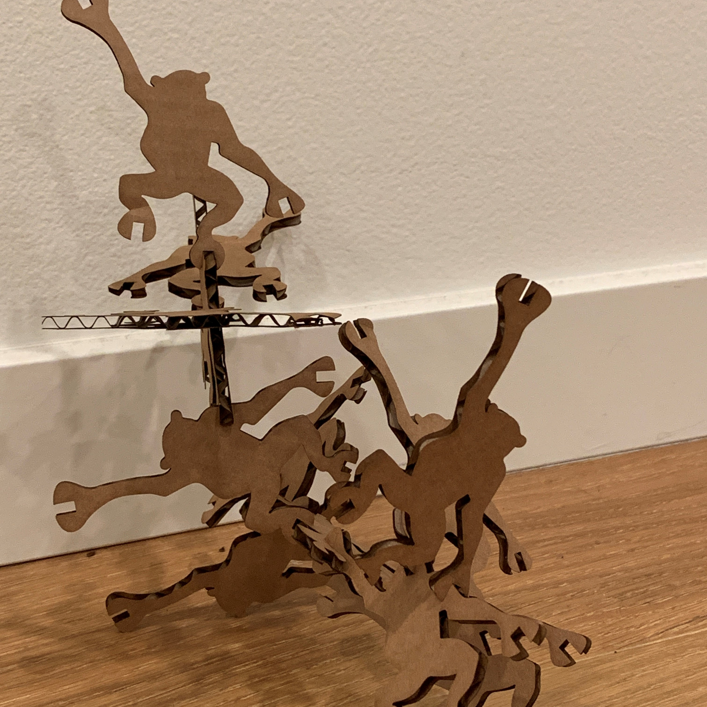

Assignment 2: Parameterized Laser-Cut Monkeys

What's more fun than a barrel of monkeys? A parameterized, interconnected, laser-cut, press fit construction kit of monkeys!
Here's the Grasshopper source file.
I started with the Illustrator file I created in Assignment 1 - the outline of the monkey without any of the notches cut into the hands and feet. I opened that Illustrator file directly in Rhino - and the outline appeared withiout me having to do any conversions.
I started by scaling up the monkey outline to around 100mm tall - I didn't want the pieces to end up too tiny. Then, I needed to parameterize the notches in the hands and feet using Grasshopper.
I started by creating a rectangle shape in Grasshopper with a number slider representing the width of the notch. I also created a parameter for height but this didn't need to be variable, so I kept it fixed.
Next, I needed to create 4 of the rectangles, and put them in the correct position and in the correct rotation relative to the monkey hands. I did this with Rotate and Move. A couple things I learned - for rotation, I needed to right-click on 'angle' and make sure it was set to 'degrees'. I also found that rotation worked better before move, when things were closer to the (0,0) point that they rotated around. I couldn't figure out how to rotate the rectangle around the center point instead. I did the same thing for each of the 4 different rectangular notches since they all had different rotation angles and position vectors.
Next up - I used Merge to group all the rectangles together into one collection of curves. Then, I set a curve to the outline of the monkey that I imported at the beginning ("Body"). I used Region Difference to trim the notches out of the monkey outline.
I wanted to create an array of 12 monkeys so I wouldn't have to do it in Illustrator, so I used Linear Array. I created a parmeter for the spacing between all of them, as well as the number of duplications.
I created two rows of 6 monkeys, then merged them together. Here's what it looked like:
I measured my cardboard width, length, and height and adjusted the 'notch width' parameter to be .2mm less than the cardbord width - to provide a snug fit. I exported the file per Josh's provided guidance to .DXF and brought it into Illustrator, making sure I set the units to millimeters in the import dialog box. It worked great! I adjusted the stroke width to .001 and sent it to the Epilog - using the settings of Power = 100%, Speed = 25%, Frequency = 50%.

These settings worked great, and I had my first batch done.
I went through the same steps for my second batch of a different cardboard material but the ".2mm less" wasn't a tight enough fit - I think because the cardboard was more compressible. I was out of cardboard from that material at that point but found a scrap that was .2mm thicker - so I had a difference of .4mm between the notch width and the actual cardboard width. I tried again with these settings and the fit was perfect.


Thanks to Emma Meersman and Elizabeth Quepons for some Grasshopper support, Leo for the great web documentation that gave me the inspiration to make my array in Grasshopper using Linear Array, and Kim Dzubinski for the moral support!